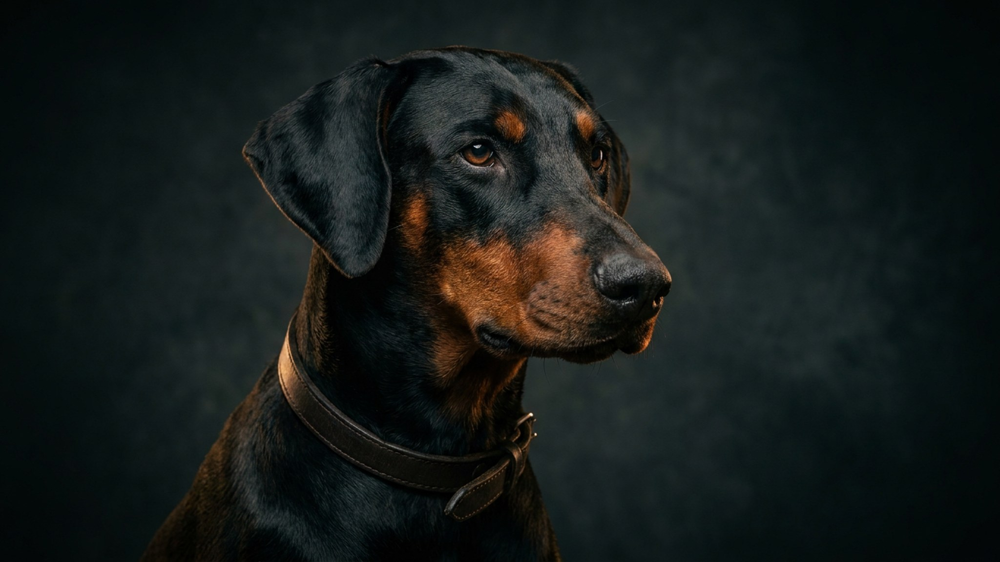

Доберман — в пятёрке самых узнаваемых «грозных» пород и в пятёрке самых недопонятых. Репутация злого охранника пришла из фильмов и старой служебной селекции, а не из характера современной собаки. Разберём, какой доберман на самом деле, почему именно первый год решает — вырастет уравновешенный пёс или тревожный — и что нельзя упустить.
🐾 Питомец ведёт себя странно?
AnimaLife расшифрует поведение кошки и собаки и подскажет, что делать. Попробуйте бесплатно прямо в мессенджере.
Породу вывел в конце XIX века немецкий сборщик налогов Карл Доберман — ему нужен был бесстрашный спутник для обходов. Ранние линии действительно были резкими и недоверчивыми. Но за 130 лет заводчики целенаправленно смягчали темперамент, отсеивая нервных и злобных собак: современный доберман — уравновешенная, ориентированная на человека собака-компаньон. Кино закрепило старый образ, а реальность давно другая. Именно поэтому судить о щенке по репутации породы бессмысленно — характер вырастет из того, как вы им займётесь.
Это классическая «липучка» — порода, которая физически не выносит одиночества и хочет быть в той же комнате, что и хозяин. Плюс:
Характер взрослого добермана во многом закладывается до года. И ключевое здесь — не команды, а социализация: спокойное, дозированное знакомство с миром.
🐾 Здоровье питомца под контролем
AI-ветеринар, дневник здоровья и персональные советы для вашего питомца — установите AnimaLife бесплатно.
🐾 Понравился разбор?
Подпишитесь на канал — каждый день разбираем по одному тревожному симптому у кошек и собак: что в пределах нормы, а когда пора к врачу. Подпишитесь, чтобы не пропустить разбор, который может спасти здоровье вашего питомца.
Доберман — не про агрессию, а про преданность и включённость в жизнь семьи. Дайте ему контакт, нагрузку и раннюю социализацию — и «страшная» порода окажется одной из самых нежных и управляемых собак в доме.